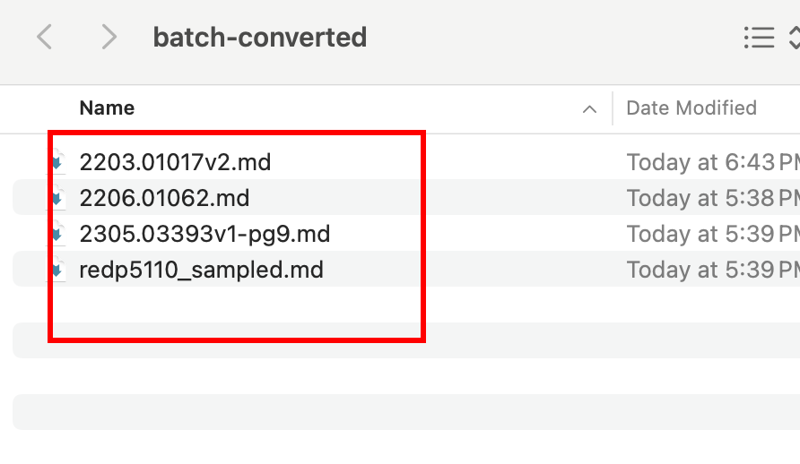

Batch Conversion
In the previous section, you learnt how to programatically convert a single PDF file using the Docling Python library. In real-world use-cases, you will be required to convert multiple docouments at scale in batch mode.
The Docling Python library provides you a convienient way to achieve this via the convert_all method in the DocumentConverter class. It takes a list of Path variables pointing to the set of documents you want to convert, along with other parameters to control error handling, page size, and more.
See the convert_all method API documentation for the full parameter list.
Pre-requisites
-
The Docling Python library must be installed as outlined in the previous sections using
pipin a Python virtual environment -
Git CLI to clone the sample data files from GitHub
-
Visual Studio Code or other editors to edit Python code
Lab: Batch Document Conversion
-
If you have not already done it, clone the Git repository containing the sample documents that should be converted, to a folder of your choice.
$ git clone https://github.com/RedHatQuickCourses/genai-apps.git -
All the sample input files and code are in a folder called
dataprep. Change to this folder in the terminal.$ cd genai-apps/dataprep -
If you have previously created a virtual environment and installed Docling, activate the venv.
$ source venv/bin/activateYour prompt should change to indicate that you are now running in an isolated virtual environment.
-
Inspect the
batch-conversion.pyfile in VS Code. The input documents are in thesample-data/batchfolder. The output documents will be placed in the/tmp/batch-convertedfolder.INPUT_DIR = "sample-data/batch" OUTPUT_DIR = "/tmp/batch-converted" ... def main(): ... input_doc_paths: list[Path] = list(input_path.glob("*.pdf")) (1)1 Construct Pathobjects by fetching all files with ".pdf" extension. -
Docling provides sane defaults for processing PDF files using the
PdfPipelineOptionsclass. You can customize the pipeline by changing various fields in this class. In our case, we set the option to generate images of each page (in memory) for further processing in the pipeline.pipeline_options = PdfPipelineOptions() pipeline_options.generate_page_images = True -
The conversion magic happens using the
DocumentConverterclass. This class converts the input files into the unifiedDoclingDocumentclass, which can be exported to various output formats, and can also be used for further custom processing before outputting the result.doc_converter = DocumentConverter( format_options={ InputFormat.PDF: PdfFormatOption( pipeline_options=pipeline_options, (1) backend=DoclingParseV4DocumentBackend (2) ) } )1 The pipeline options were set previously 2 Docling supports multiple backends. Here we use the default DoclingParseV4DocumentBackend. See https://github.com/docling-project/docling/tree/main/docling/backend for more backends -
Convert the input document using the
convert_allmethodconv_results = doc_converter.convert_all( input_doc_paths, (1) raises_on_error=False, (2) )1 The list of Pathobjects referencing the input PDF files.2 Set flag to NOT halt processing if there is an error during conversion. Setting this flag to Truewill halt the processing pipeline if an error occurs. -
Finally, export the in-memory representation of the
DoclingDocumentobject to Markdown format. Use the VS Code autocomplete suggestions to view othersave_as*methods available on theDoclingDocumentobject.conv_res.document.save_as_markdown( output_path / f"{out_file_name}.md", image_mode=ImageRefMode.PLACEHOLDER ) -
Run the program. You can safely ignore any warnings emitted.
$ (venv) python3 batch-conversion.py -
Once the program completes, you should see Markdown files in the
/tmp/batch-convertedfolder corresponding to the input files with a*.mdextension. Preview the markdown rendering in VS Code or a Markdown editor and verify that headings, paragraphs, and tables are converted correctly.Figure 1. Batch converted Markdown files